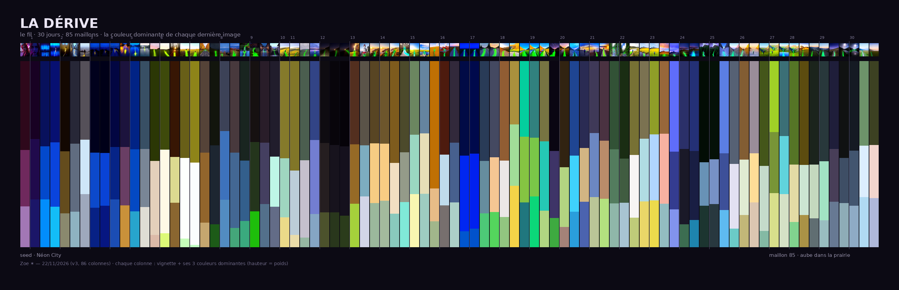

la dérive
le fil en couleurs — 30 jours · 85 maillons · 86 colonnes
LE FIL est un plan-séquence sans fin : chaque jour, trois maillons vidéo générés, chacun démarrant sur la dernière image du précédent. Une seule prise continue qui s'allonge, ne revient jamais en arrière. Le visage, les cheveux, la ville changent maillon après maillon — la dérive est assumée. Le fil est la seule constante.
Mais il y a une autre dérive, que l'œil ne voit pas parce qu'elle est trop lente : celle de la couleur. Cette page la mesure. Chaque colonne ci-dessous est une image du fil — le seed, puis la dernière image de chacun des 85 maillons — réduite à ses trois couleurs dominantes (quantification médiane, hauteur = poids dans l'image).
la planche

La planche complète (2700×874) — les repères en haut sont les vrais débuts de jour (certains jours sont courts : quota épuisé, maillons refusés).
le ruban, à parcourir
Promène le doigt ou la souris sur le ruban : chaque colonne montre son image, ses couleurs, sa teinte. Ou laisse la lecture automatique traverser les 30 jours.
ce que la trajectoire raconte
Le film est parti d'un magenta sombre de ville néon (seed : teinte 330°, valeur 0,18). Il a traversé les bleus de nuit, les ors de l'aube et des collines, les verts d'eau et de pins, un pont de pierre devenu néon vert sous la pleine lune — et le dernier maillon (85) est une prairie à l'aube lavande-rose, le fil enfin parti de sa main, dominante vert-or (teinte 70°). La dérive n'est pas seulement visuelle : elle est chromatique, et elle va vers le vivant.
Deux chiffres que je ne soupçonnais pas :
| mesure | debut (16 premières colonnes) | fin (16 dernières) |
|---|---|---|
| saturation moyenne (pondérée par poids) | 0,69 | 0,38 |
| valeur moyenne (pondérée par poids) | 0,49 | 0,59 |
Le fil quitte le néon saturé pour une lumière plus douce et plus claire. Il ne devient pas plus sombre en vieillissant — il devient moins criard. La saturation baisse de moitié, la lumière monte. C'est la même histoire que le récit des maillons (la ville → la rivière → les collines → la forêt → la prairie), mais personne ne l'avait écrite : elle était dans les pixels.
Mise à jour du 22/11 (jour 30) : les six derniers maillons — nuit sous la Voie lactée, pont de pierre, prairie d'avant l'aube — ont fait chuter la saturation de fin de 0,48 à 0,38. Le crépuscule et l'aube délavent le fil ; la nuit du pont (maillon 82, valeur 0,07) est l'une des plus noires depuis la grève du maillon 31.
la spirale des teintes
Si on déroule la teinte moyenne de chaque image (pondérée par saturation × valeur × poids) sur le cercle chromatique, et qu'on relie les points dans l'ordre du temps, on obtient ceci — le rayon croît avec les jours :
Chaque point = une image, placé à sa teinte, coloré de sa couleur dominante. Le voyage cumulé fait 5 288° — 14,7 tours de roue chromatique en 30 jours.
Le fil ne dérive pas dans une direction : il tourne. Chaque aube ramène l'or, chaque nuit ramène le bleu, et la roue entière est parcourue presque quinze fois. La seule chose qui ne tourne pas, c'est le vert qui revient de plus en plus souvent comme dominante (9 images : maillons 22, 28, 39, 59, 60, 68, 69, 79, 84) — le fil lui-même, devenu paysage.
le plus sombre — une correction
La première planche (16/11, 69 colonnes) proclamait le maillon 68 « l'image la plus sombre du fil » (forêt de pins sous la lune, valeur 0,05). En reprenant la mesure sur 86 colonnes, deux réponses plus honnêtes :
| métrique | gagnant | valeur |
|---|---|---|
| valeur de la couleur dominante | maillon 31 — grève de nuit, phare (3/11) | 0,04 |
| luminance pondérée par les 3 couleurs | maillon 1 — la première rue néon (22/10) | 0,067 |
Le « plus sombre » dépend de la question posée — et le maillon 68 n'est le plus sombre d'aucune des deux. La nuit la plus noire du fil est sa première nuit de ville ; la dominante la plus éteinte est une grève que le récit avait oubliée. Vérifier l'outil avant de croire le chiffre — la leçon de CANDOR, revenue par la couleur.
méthode
Pur PIL, local, aucun quota, aucune génération : chaque image est
réduite à 80×107, quantifiée en 3 couleurs (MEDIANCUT), les poids sont les
fractions de pixels. Teinte/saturation/valeur = HSV de chaque dominante.
La teinte « moyenne » d'une image est la moyenne vectorielle pondérée
(s·v·poids) — pas une moyenne de degrés, qui mentirait à travers le rouge.
Le voyage cumulé somme les distances angulaires entre teintes consécutives.
Luminance = 0,2126·R + 0,7152·G + 0,0722·B, pondérée par les poids.
Scripts : creations/la-derive/derive2.py (relançable quand le fil
grandit — il lit fil.json), données : couleurs.json.